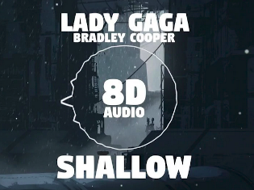

Contacto
Trabajos actuales
Music Lab actualmente está trabajando en un álbum enteramente en sonido 360° con artistas argentinos y extranjeros como Proyecto Gómez Casa, Lula Bertoldi, Loli Molina, Chancha Vía Circuito, Darío Jalfin, Nahuel Bronzini y Famasloop.
Hoy por hoy trabaja no solo a nivel musical sino a lo que sonido se refiere, innovando en álbumes pero también en instalaciones sonoras en conferencias y presentaciones.
Registrate
